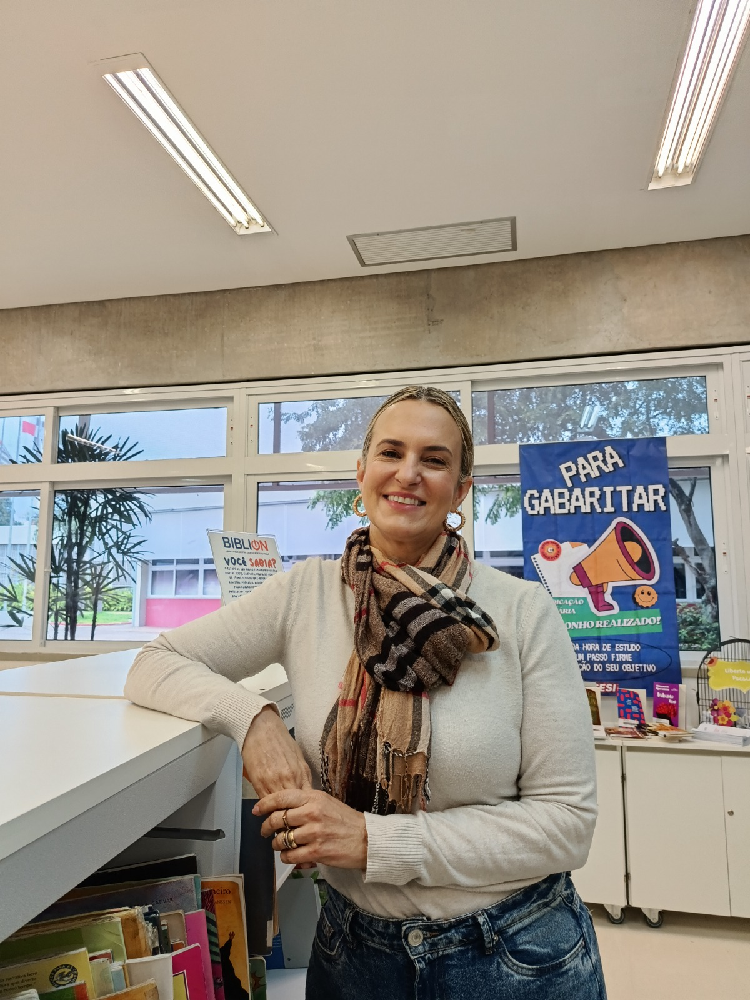

"A biblioteca é o coração da instituição, um espaço de acolhimento e o apoio fundamental para toda a escola."
Clique para ler a entrevista completa
Escolhi ser bibliotecária por vocação, pois sempre quis trabalhar em ambiente escolar. Lutei bastante para cursar a faculdade pública na UFSCar e passei por experiências marcantes até chegar ao SESI, onde estou há 3 anos. Minha maior conquista profissional foi entrar para a rede SESI, que nos oferece uma incrível liberdade criativa para desenvolver trabalhos com os estudantes.
O que mais gosto no meu trabalho é acompanhar a evolução dos alunos na leitura, desde o primeiro aninho até o ensino médio. Para mim, a biblioteca é o coração da instituição e um espaço essencial de acolhimento. Nosso maior desafio profissional é a valorização da profissão e conseguir fazer com que os estudantes compreendam a importância de ler.
Minha grande inspiração de vida é minha mãe, uma mulher de muita fé e força. Para mim, trabalhar com educação é ter a esperança de que a mudança do mundo está nas mãos dos alunos. Meu conselho é: nunca desistam dos seus sonhos, leiam e estudem, pois a leitura nos torna livres e nos dá voz. Valorizem os profissionais da educação!